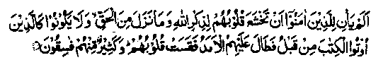
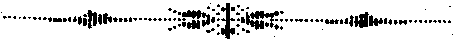

Chapter Seven
65. Malik bin Dinar’s story of his reformation through his young deceased daughter
Sheikh Maalik Bin Dinar Rahmatullah alaihe was one of the renowned Divines of his times. We have already narrated some anecdotes from his life in this book. It is said that, in his early life, he was not a pious man and when someone asked him how he came to repent of his sins and abandon his evil ways, he related the following story about himself:- I was a policeman, in my youth, and was fond of wine and would drink like a fish. I drank day and night and led a carefree life. I bought a beautiful slave-girl whom I loved most dearly. I had a daughter from her a lovely child, and I was very fond of her and she was also very fond of me. When this baby daughter began to walk and talk, I loved her all the more and she remained with me all the time. The innocent child had a strange habit When she saw a glass of wine in my hands, she would snatch it away and spill it on my clothes. Being and of her, I did not scold her. As fate would have it, my innocent child died when she was two years old and I was stunned with shock and heart-sore with bitter grief.
One night, the fifteenth of Sha’ban, I was dead drunk and went to sleep without performing my Isha Salaat I had a most horrible dream, in which I saw that it was the Day of Resurrection, with men coming out of graves, and I was one of those who were being driven to the Place of Assembly (Maidaan-e-Hashr). I heard the noise of something following me and, looking back, I saw a huge snake chasing me, close behind. Ah! it was a most horrible sight;the snake had blue catlike eyes, its mouth was wide open and it was rushing towards me, most furiously! I ran faster in terror, desperate for my life, the horrible snake still running after me and drawing closer. I saw an old man, dressed in elegant clothes, with rich perfumes wafting all around his person, I greeted him saying, ‘Assallam-o-Alaikum’ and he returned my greetings. I said, "For the sake of Allah, help me in my misery." He said, I am too weak to help you against such a mighty foe; it is beyond my powers. But you must go on running; perhaps you may find some help to save you from it". Running wildly I saw a cliff in front of me and climbed it, but on reaching its top, I saw, beyond it, the raging Fire of Jahannam, with its most horrifying spectacles. I was so terrified by the snake, that I ran on, till, I was afraid I would fall into Jahannam. Meanwhile, I heard a voice calling aloud, "Get back, for, you are not one of them (‘Jahannamis)". I came away and began to run in the opposite direction. The snake also turned around and came after me. I saw, again, the white-robed old man and said to him, "Old man, can’t you save me from this python; I asked you before, but you did not help me". The man began to cry and said, "I am too weak to help you against such a mighty snake, but I can tell you that there is a hill nearby where they keep the ‘sacred trusts’ of the Muslims. If you go up that hill, you might find something of yours, kept intrust, which might save you from the snake." I rushed towards the hill, which was round in shape, with a large number of open curtained casements. The casements had golden shutters studded with rich rubies, and most precious jewels; on each shutter hung a curtain made of the rarest silk. When I was going to climb the hill, the angels called aloud, "Open the windows and raise the curtains and come out of your closets! Here is an unfortunate man in misery; may be you have with you some ‘trust’ of his, that might help him in his distress." The windows opened at once, the curtains went up, and there issued forth from the casements a host of innocent children, with faces bright as the full moon. By this time I was utterly despondent, for, the snake had drawn very close to me. Now the children called their friends, "Come out quickly all of you, for the snake has come very close to him”. Hearing this,more children came out of the windows, in large crowds, and among them I saw my own dear daughter who had died some time ago. She also espied me and began to weep, exclaiming, "By Allah! he is my own dear father". She jumped on a swinging cradle, which seemed to be made from heavenly light (Noor) and darted across to me. Next moment, she was standing by my side and I took her to my bosom; she lifted her left hand towards me and with her right hand motioned the snake away. The snake went away immediately. Then she gave me a seat and sat in my lap and began to stroke my beard with her right hand saying, "My dear father,

Has not the time come for the Believers (who indulge in sins) that their hearts should submit in all humility to the remembrance of Allah and to the truth which is revealed” (al-Hadeed: 16)
I was moved to tears and asked her, "My daughter, do all of you know the meanings of the Qur’an?," ‘She replied, "We understand the Holy Qur’an even better than you." ‘I asked her, "My dear child, what was this snake?" ‘She said, "It was your own evil deeds which had made it so strong that it was about to push you into Jahannam.' I asked, "And who was that white-robed old man?" She replied, "That were your good deeds and you had made them so weak with your scanty good deeds that he could not help you against the snake (though he suggested to you a means of escape)" I asked, "What are all of you doing on this hill?" She replied, "We are the children of Muslims, who died in infancy. We shall live here till the Day of Resurrection, waiting to be reunited with you when you come to us at last and we shall intercede for you with our Lord." And then I awoke from the dream, with the fright (of the snake) still heavy on my heart I turned to Allah in repentance, as soon as I arose, and abandoned my evil ways. (Raudh)
